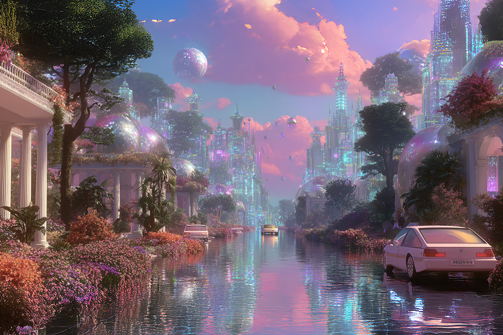
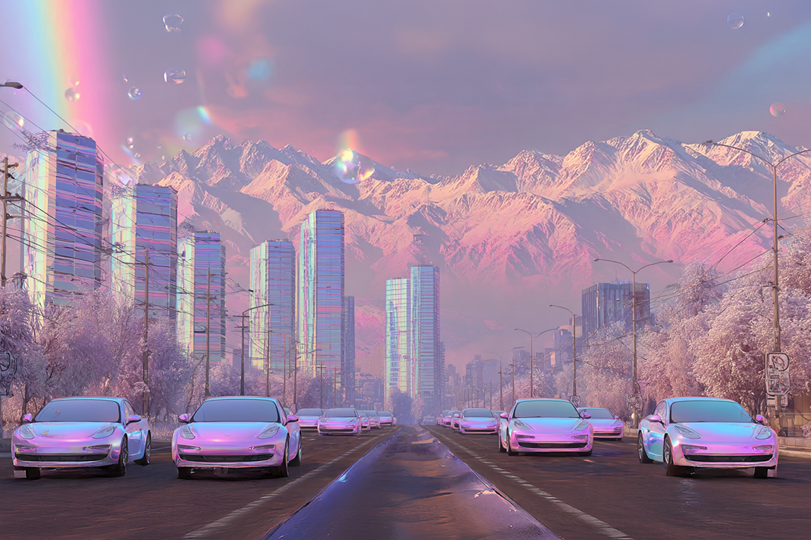
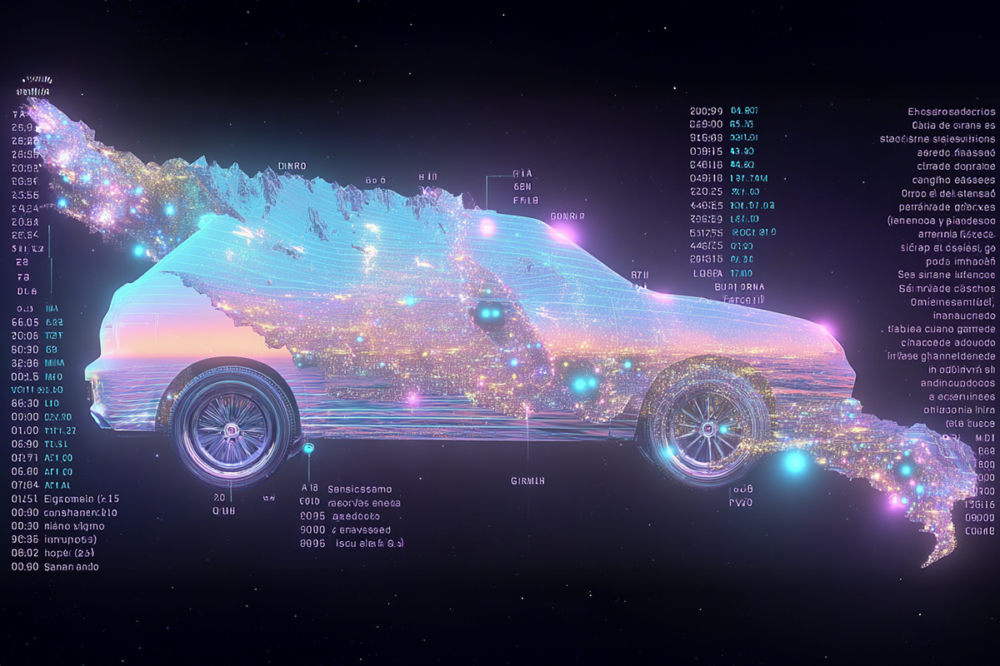
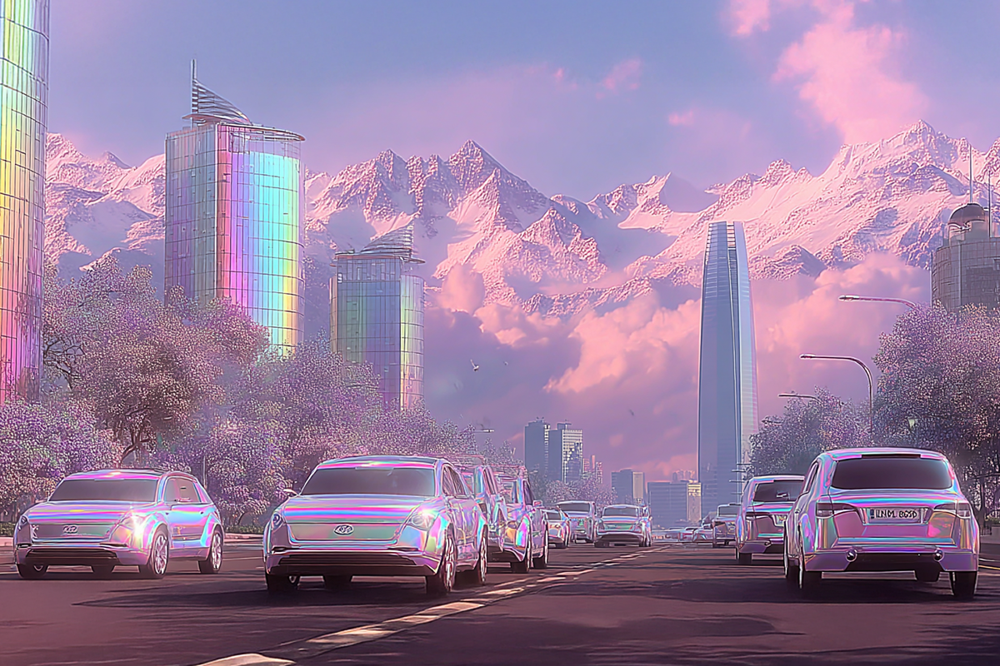

En Chile, ¿estamos listos para enchufarnos?
El boom de la electromovilidad llegó más rápido que los cargadores…
El boom de la electromovilidad llegó más rápido que los cargadores…

En los últimos meses, pareciera que Chile se está preparando para “enchufarse”. Las calles se están llenando poco a poco de autos silenciosos, los enchufes en los malls ahora están ocupados por autos futuristas, y más de un familiar o conocido ya pregunta si vale la pena cambiarse a un eléctrico.
Y con razón: en lo que va de 2025, las ventas de autos eléctricos rompieron récords en Chile, creciendo más de 140% respecto al año pasado. Para que te hagas una idea más concreta, solo en el primer trimestre se vendieron 6.137 autos de cero o bajas emisiones, según Mobility Portal Latinoamérica. Y si miramos las cifras de 2024, el salto fue aún más heavy: el crecimiento fue de 183% con 4.507 unidades vendidas.
BYD, Changan, Tesla y Volvo lideran el mercado y concentran el 63% de las ventas. Así que sí: el futuro llegó, es silencioso y se carga por cable. Pero… ¿Chile está realmente listo para tanto voltaje?

La electrificación avanza a paso firme, pero hay un detalle no menor: los puntos de carga aún no acompañan el ritmo.
En Santiago hay más autos eléctricos que estaciones de carga rápida, y en regiones, muchas veces la única opción es el enchufe del garaje.
Esto genera un fenómeno curioso: estamos comprando autos del futuro… con una infraestructura del pasado. Y aunque suena chistoso y hasta absurdo, también plantea un desafío para todos los que sueñan con dejar atrás la bencina: ¿dónde cargamos, cómo planificamos viajes largos y qué pasa si se corta la luz?

Los autos eléctricos no solo cambiaron la forma de movernos, sino también la forma en que pensamos la movilidad. Ya no se trata de “ir del punto A al B”, sino de manejar con conciencia energética: revisar autonomía, calcular trayectos, optimizar tiempos.
De hecho, muchos conductores usan apps con IA que predicen el consumo según el clima o tipo de conducción. Así que el manejo se volvió más técnico, pero también más inteligente.
Sin embargo, con más tecnología a la mano, llega más responsabilidad: las baterías necesitan un mantenimiento especializado, los repuestos son distintos y los seguros también.
Un auto eléctrico no se asegura igual que uno convencional, y es ahí donde muchos se llevan la sorpresa: desde la cobertura de baterías hasta asistencia en ruta, hay nuevos factores que comparar antes de decidir.

No se trata de frenar el entusiasmo, al contrario: es un buen momento para mirar el futuro con optimismo.
Chile está avanzando rápido, las marcas están apostando fuerte y la conciencia ambiental crece en cada generación. Pero también es importante hacerlo con cabeza: elegir un eléctrico también es un cambio de mentalidad.
Probablemente, sí, pero con información y respaldo. Porque no basta con sumarse a la tendencia; hay que entenderla.
El futuro eléctrico es emocionante, sin duda, pero exige planificación, educación y un buen seguro que acompañe el cambio. Y en ComparaOnline apostamos por acompañarte en el proceso, ayudándote a comparar y elegir seguros automotrices.
Porque enchufarse también significa hacerlo de forma segura e informada.